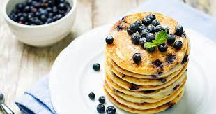

Palacsinta receptje
Hozzávalók:
- 20 dkg liszt
- 2 tojás
- 3 dl tej
- 3 dl szóda
- csipet só
- 2 ek Vénusz étolaj

Elkészítés:
- Felütjük a tojásokat, kicsit felverjük, majd hozzáadjuk a lisztet.
- Apránként hígítjuk a tejjel és a vízzel, csipet sóval ízesítjük.
- Az olajat is hozzáadjuk.
- Forró serpenyőbe öntünk annyi tésztát, hogy ne legyen túl vastag a palacsinta, majd mindkét oldalát pirosra sütjük.